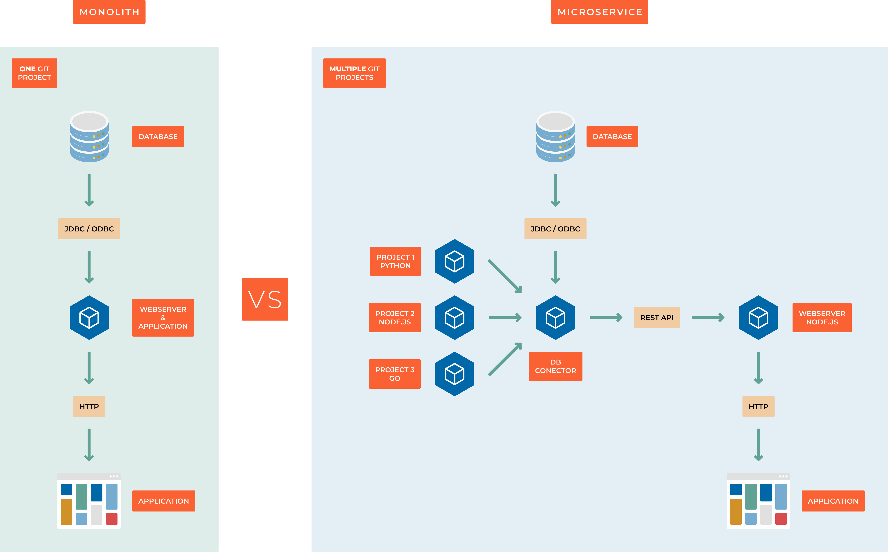

1.3 Microservices
Note
A microservice is a software architectural style in which a large application is decomposed into a collection of small, independent services. Each service is responsible for a specific business capability and interacts with other services through simple, well-defined interfaces. Microservices are designed to be loosely coupled, enabling independent development, deployment, and scaling.
The primary benefit of microservices is that they allow teams to focus on smaller, manageable components rather than maintaining a large monolithic codebase. This approach simplifies testing, deployment, and scaling, leading to faster development cycles and more resilient systems.
Microservices are commonly built using diverse technologies and are often deployed in containers or virtual machines. They communicate via APIs, allowing services to be implemented in different programming languages and operate across various platforms.
Additionally, microservices empower teams to select the most suitable languages, frameworks, and technologies for each service, optimizing development efficiency and flexibility.
In summary, a microservice is a self-contained unit that handles a specific business function and communicates through well-defined interfaces. Its loosely coupled nature simplifies testing, deployment, and scaling, resulting in faster development and more reliable systems.
Monolithic Architecture
In a monolithic architecture, all processes are tightly coupled and run as a single unit. This design means that if one part of the application experiences a surge in demand, the entire system must scale. As the codebase grows, maintaining and enhancing a monolithic application becomes more challenging, limiting experimentation and innovation. Furthermore, monolithic architectures increase the risk of application failures due to the high interdependence of components.
Microservices Architecture
A microservices architecture structures an application as a set of independent services, each handling a specific process. These services communicate through well-defined interfaces using lightweight APIs. Each service is built around a distinct business capability and functions autonomously. This independence allows services to be updated, deployed, and scaled separately to meet varying demand levels.
{kind=link}
Key advantages of microservices over monolithic architecture:
Scalability - Each service can be scaled independently, optimizing resource utilization.
Testability - Services can be tested in isolation, ensuring reliability.
Deployment Flexibility - Each service can be deployed separately without affecting others.
Maintainability - With a single responsibility per service, updates and modifications are more manageable and less disruptive.